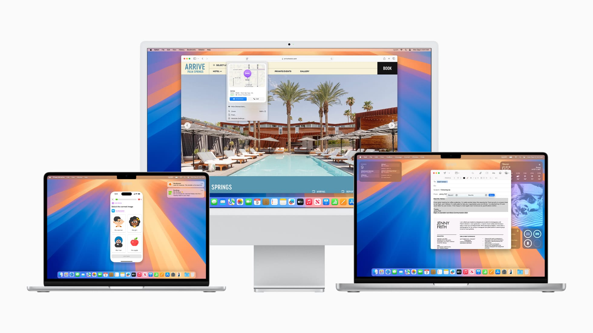
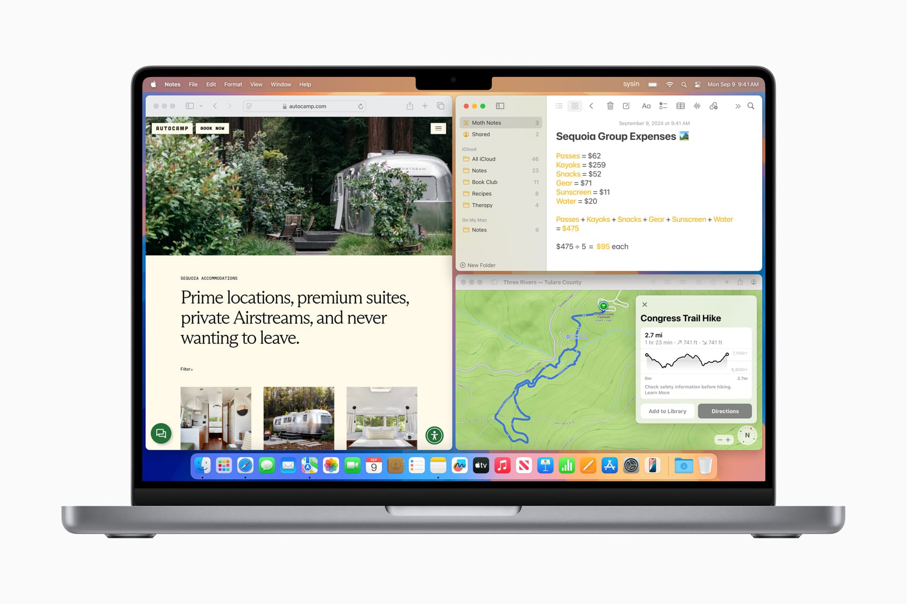
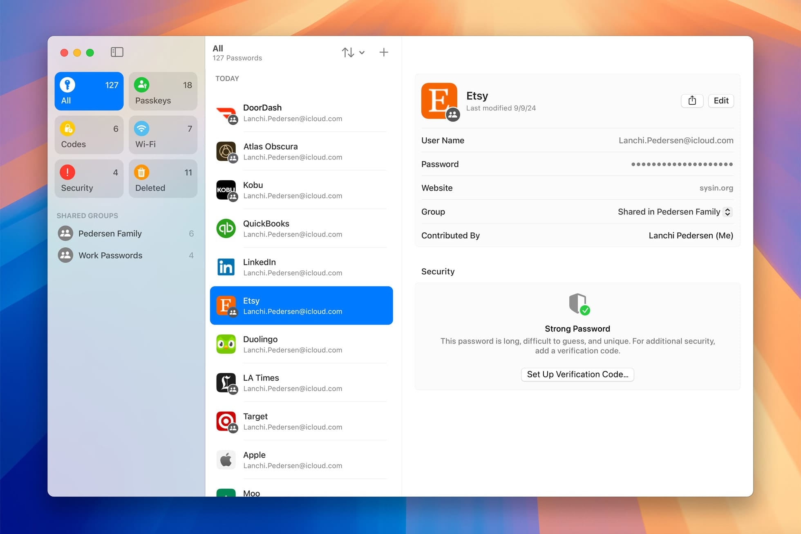
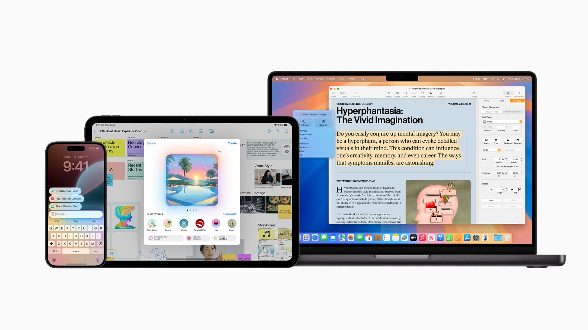

请访问原文链接：macOS Sequoia 15.2 (24C101) 正式版 ISO、IPSW、PKG 下载 查看最新版。原创作品，转载请保留出处。
作者主页：sysin.org
macOS Sequoia 15.2 (24C101)，2024 年 12 月 11 日，Apple 智能推出图乐园、智绘表情、增强版写作工具与视觉智能。
此次更新引入了由 Apple Intelligence 提供支持的新功能，这款个人智能系统开启了强大的沟通、工作和表达自我的新方式，同时在 AI 隐私方面迈出了非凡的一步，保护了你的数据。新功能包括 Image Playground，可让您创建令人愉悦、有趣的图像；ChatGPT 支持直接集成到 Siri 和写作工具中；等等。此版本还包括对 Photos 和 Safari 的增强，以及 Mac 的其他功能、错误修复和安全更新。
Apple Intelligence（搭载 Apple 芯片的 Mac）
Image Playground（图乐园）
- 使用照片库中的概念、描述和人物创建多种样式的有趣、有趣的图像
- 滑动以查看预览，以便在将概念添加到 Playground 时进行选择
- 创建图像时从动画和插图样式中进行选择
- 在 “信息” 和 “无边记” 以及第三方 App 中创建图像
- 使用 iCloud 在您的所有设备上同步 Image Playground 图库中的图像
ChatGPT 支持
- OpenAI 的 ChatGPT 可以直接从 Siri 或写作工具访问
- Compose in Writing Tools 允许您使用 ChatGPT 从头开始创建一些东西
- Siri 可以在相关时利用 ChatGPT 为您提供答案
- 不需要 ChatGPT 帐户，您的请求将是匿名的，不会用于训练 OpenAI 的模型
- 使用 ChatGPT 登录以访问您的帐户权益，请求将包含在 OpenAI 的数据政策中
Apple Intelligence 的其他功能
- Describe your change in Writing Tools 允许您建议希望如何重写某些内容；例如，作为一首诗
Apple Intelligence 在中国大陆区域暂不可用，以下是中国大陆区域包含的新增功能。
本更新改进了 “照片”，新增了自定义 Safari 浏览器起始页的选项，并包括针对 Mac 的其他功能、错误修复和安全性更新。
照片
- “个人收藏” 相簿除了显示在 “固定精选集” 中，还会显示在 “更多项目” 精选集中
- 可清除 “最近查看” 和 “最近共享” 相簿历史记录
Safari 浏览器
- 可使用全新背景图像自定义 Safari 浏览器起始页
- HTTPS 升级会尝试在所有网站上使用安全的 HTTPS
- 简化了历史记录、书签和密码的导入以及导出
本更新还包括以下改进和错误修复：
- “查找” 中的 “共享物品位置” 可让你轻松与航空公司等受信任第三方安全共享 AirTag 或 “查找” 网络配件的位置，协助你定位和寻回遗落物品
- “播客” 中的 “喜爱类别” 可让你选取喜爱的类别，并获取可在 “资料库” 中轻松访问的相关节目推荐
- “播客” 中的个性化 “搜索” 页面可高亮标记最相关的类别和为你量身定制的编辑精选集
- 演讲者预览可让你在连接外接显示器或使用隔空播放共享前，选取要共享 App 还是整个屏幕
- “股市” 中的盘前价可让你跟踪开盘前的 NASDAQ 和 NYSE 股价
- 菜单栏中的 “天气” 可让你从 Mac 菜单栏获取当前天气状况，并点进以快速访问详细天气预报
某些功能并非在所有地区都可用，也并非在所有 Apple 设备上都可用。
macOS Sequoia 15.1.1 (24B91 | 24B2091)，2024 年 11 月 19 日，本更新提供了重要安全性修复。
macOS Sequoia 15.1 (24B2083)，2024 年 10 月 30 日，仅适用于搭载 M4 系列芯片的 Mac。
macOS Sequoia 15.1 (24B83)，2024 年 10 月 28 日
此更新引入了由 Apple Intelligence 提供支持的第一组功能，Apple Intelligence 是一个个人智能系统，它解锁了强大的通信、工作和表达自我的新方式，同时通过人工智能隐私保护您的数据。（仅限特定地区）
- Apple Intelligence (Mac with M1 and later)
本更新为 iPhone 镜像带来了拖放支持，并为 Mac 带来了其他功能、错误修复和安全性更新。
iPhone 镜像
拖放支持可让你在 Mac 和 iPhone 之间无缝移动文件、照片、视频等内容
本更新还包括以下改进和错误修复：
- 可选择将游戏和 App 自动下载并安装到外置磁盘驱动器
某些功能并非在所有地区都可用，也并非在所有 Apple 设备上都可用。
macOS Sequoia 15.0.1 (24A348)，2024 年 10 月 3 日
本更新提供针对 Mac 的重要错误修复，包括：
- 回复包含共享 Apple Watch 表盘信息时，“信息”可能会意外退出
- 改进了与第三方安全性软件的兼容性
某些功能并非在所有地区都可用，也并非在所有 Apple 设备上都可用。
macOS Sequoia 将 Mac 生产力与智能化提升至全新高度
iPhone 镜像、Safari 浏览器重大更新和 Apple Intelligence 等众多全新功能令 Mac 使用体验再升级
macOS Sequoia 发布公告

macOS Sequoia 以 iPhone 镜像拓展连续互通功能、新增生产力与视频会议工具，并为即将推出的多款游戏带来更具沉浸感的游戏体验。
加利福尼亚州，库比提诺，Tim Cook 领导的 Apple 今日发布 macOS Sequoia，这一全球领先的桌面操作系统迎来重要升级，为 Mac 带来全新工作方式与变革性的智能化功能。macOS Sequoia 满载一系列震撼人心的新功能 (sysin)，包括进一步扩展了连续互通的 iPhone 镜像，用户可以直接从 Mac 上完全访问并控制 iPhone。Safari 浏览器得到重大更新，全新的 Highlights 功能让用户在浏览网页时更轻松地找到所需信息。新 Passwords app 集所有密码和凭证于一处，方便用户取用和管理。Mac 游戏体验更具沉浸感，同时有众多全新游戏佳作登陆 Mac，包括《刺客信条：影》和《Frostpunk 2》等更多作品。
macOS Sequoia 还带来适用于 Mac、iPhone 和 iPad 的个人智能化系统 Apple Intelligence，基于个人场景发挥生成式模型的强大功用，结合用户场景提供有助益且相关的智能化功能。Apple Intelligence 从设计之初就十分注重用户隐私，并深度集成于 macOS Sequoia、iOS 18 和 iPadOS 18。它能理解并生成语言和图像、跨 app 执行操作 (sysin)，运用个人场景，为日常任务简化步骤、增效提速。Apple Intelligence 充分利用 Apple 芯片和神经网络引擎的卓越功能，将为搭载 M 系列芯片的 Mac 提供强大助力。
“强大的 Apple 芯片与易用的 macOS 相结合，令 Mac 设备空前强大。我们十分高兴能通过 macOS Sequoia 将 macOS 推至全新境界，这一重要更新将大大提升生产力与智能化程度。”Apple 软件工程高级副总裁 Craig Federighi 表示，“macOS Sequoia 引入 Apple Intelligence，解锁不可思议的全新功能 (sysin)，为使用 Mac 工作带来颠覆性的体验。macOS Sequoia 还有更多方式助力用户轻松完成事项，包括 iPhone 镜像在内的连续互通新功能、Safari 浏览器重大更新，以及一系列新游戏。相信 Mac 用户一定会爱上它。”
iPhone 镜像
macOS Sequoia 带来最新连续互通功能——iPhone 镜像，让 iPhone 与 Mac 的协作更加轻松。用户现可直接在 Mac 上访问并控制 iPhone。自定义墙纸和 app 图标也将以 iPhone 上的原貌呈现。使用 iPhone 镜像，用户可以在主屏幕上轻扫切换页面；启动与浏览常用 app；直接用 Mac 查看并回复 iPhone 通知。使用 iPhone 镜像期间，iPhone 会保持锁定状态，因此其他人无法使用此 iPhone 或看到用户对 iPhone 的操作。该功能还支持待机显示，使用 iPhone 镜像期间，用户仍能继续在 iPhone 上一目了然地获取信息。
进行 iPhone 镜像期间，用户可直接在 Mac 上完全访问并与 iPhone 交互，而附近的 iPhone 会保持锁定。
Safari 浏览器新功能
全球速度领先的浏览器——Safari 浏览器推出新功能 Highlights，帮助用户更轻松地发现网络上的信息。在机器学习的驱动下，Highlights 可以自动生成场所路线、文章摘要或快速链接，帮助用户深入了解网页上的人物、音乐、电影和电视剧等。重新设计的阅读器通过优化的视图、摘要和目录帮助用户更快地阅读文章，新检视器则可视频放置在屏幕正中央，同时用户仍可任意使用系统播放控制。Distraction Control 功能让用户能在浏览网页内容时隐藏所有干扰性元素。

Safari 浏览器 app 的 Highlights 功能能快速找出网站内的相关信息，令探索网页内容更容易。
更方便的并列显示
排布窗口的新方式让用户可以自由打造最适合自己的桌面布局。将窗口拖到屏幕边缘，macOS Sequoia 会自动在屏幕上给出并列显示位置建议。用户可以将窗口放在合适位置、快速并列放置窗口，或者将窗口放在屏幕角落，以便一眼看到更多 app。新的键盘快捷键和菜单栏快捷键帮助用户更快整理并列显示窗口。

更简单的窗口并列显示让用户能快速将窗口拖至屏幕上的重要区域，轻松打造并列效果，或者将窗口放在角落，以便一眼看到更多 app。
全新密码 app
全新密码 app 让用户在 Mac 上的同一个地方更轻松地取用密码、通行密钥、无线局域网密码和其他凭证。密码 app 仰仗极为安全的端到端加密技术。密码 app 支持 Safari 浏览器，且能与用户的所有 Apple 设备和已下载 Windows 版 iCloud app 的 Windows 设备无缝同步。

新 Passwords app 集所有密码和凭证于一处，方便用户取用和管理。
视频会议功能更新
在使用 FaceTime 通话或 Webex 等第三方通话 app 时，用户可以应用优美的内置背景，包括多种渐变色彩或者风景照片，如加州库比提诺 Apple Park 内外的美景。用户还能上传自己的照片用作背景，Apple 领先业界的图像分离技术会让用户在每次通话中呈现最佳形象。演讲者预览功能可以让用户在通过 FaceTime 通话和 Zoom 等 app 共享内容之前看到即将展示的画面。

用户可以选择美观的内置背景，Apple 业界领先的分离技术让用户在 macOS Sequoia 中进行视频通话时呈现最佳形象。
Apple Intelligence 掀开 AI 新篇章
已在部分地区发布：Apple 智能

Apple 智能功能随 iOS 18.1、iPadOS 18.1 和 macOS Sequoia 15.1 发布，未来几个月内还将推出更多相关功能。
Apple Intelligence 深度集成于 macOS Sequoia，从设计之初就十分注重用户隐私，解锁了增强写作与高效交流的新方式。macOS Sequoia 内置可以全系统调用的新工具 Writing Tools，帮助用户重写、校对和总结文本 (sysin)，在几乎任何场景都可用，包括邮件、备忘录、Pages 文稿和第三方 app。

Apple Intelligence 驱动众多 Writing Tools，例如 Rewrite 就可为用户撰写的文本提供不同的版本选择，根据受众和文稿诉求调整文风。

Proofread 工具能为用户检查语法、措辞和语句结构，还能同时给出修改建议，以及对修改建议的说明，方便用户查看或快速采纳。

Summarize 工具可在用户选中文本后，以易于理解的段落、要点罗列、表格或列表的形式对其进行归纳总结。
全新图像功能为交流和表达自我增添更多乐趣。有了 Image Playground，用户仅需几秒就能创作趣味图像，提供三种风格选项：动画、插画和素描。Image Playground 简单易用，在信息等 app 中即可使用，也提供单独的 app。

使用 Image Playground 时，用户可根据不同的分类从大量的创意中进行选择、输入对图像的自定义描述、从照片图库中选取任意人物添加在图像内，还可挑选喜爱的样式。
利用照片 app 的“回忆”功能，用户只需输入一段描述文本，便可快捷地创作出自己想要看到的故事。Apple Intelligence 将根据描述文本挑选出最适合的照片和视频，依据识别出的照片题材，设计出一段分为不同章节的剧情，然后将这些素材整理成一段叙事结构完整的影片。新增的 Clean Up 工具还能够识别并移除照片背景中无关紧要的物体，但不会随意改变主体。

Mac 上的 Siri 更自然、更有帮助。用户可以与 Siri 文字交流，在文本和语音之间随心切换，用最适合当时需要的方式与 Siri 沟通。
在 Apple Intelligence 的强力加持下，Siri 的表现显著增强，应答更自然、更切题，也更个人化。此外，用户也可以与 Siri 文字交流，在文本和语音之间随心切换，用最适合当时需要的方式与 Siri 沟通，令 Mac 上的 Siri 体验更轻松、更流畅。
通过 Private Cloud Compute，Apple 为 AI 的隐私功能树立了全新标准，并能在设备端进程和搭载 Apple 芯片的更大型、基于服务器端模型之间灵活配置和扩充计算资源。请求发送至 Private Cloud Compute 期间，数据不会存储在服务器端，也无法被 Apple 访问，仅限用于完成用户请求的任务，这一隐私保护情况可由独立专家核验。
此外，各个 Apple 平台上的 Siri 和全系统可用的 Writing Tools 均集成 ChatGPT 功能，支持用户直接运用 ChatGPT 的特殊功能，包括它对图像和文档的理解能力，为用户省去在不同工具间来回切换的麻烦。
其他功能
macOS Sequoia 为用户喜爱的 Mac app 添加了许多独特且实用的功能。
信息
在信息 app 里，用户可以预设发送时间，将信息稍后发送。文字信息新增独特文字效果，用“爆炸”“涟漪”“点头”等动画生动凸显文字或表情符号，用户还可在“点回”中使用任意表情符号或贴纸。
备忘录
在备忘录 app 里，用户可以录制音频并得到实时转写文本，轻松记录演讲、会议或对话的细节。macOS Sequoia 还迎来了数学笔记功能，用户只需在 Mac 版备忘录 app 上输入数学表达式或数学题就能立即得到解答。
地图
在地图 app 里，户外活动爱好者可以获取精美的地形地图和美国各地国家公园里数以千计的徒步路线。用户只要几下点按，就可轻松创建自定义步行和徒步路线。

macOS Sequoia 可以让用户在信息 app 里将文字信息设为稍后发送。

地图 app 为想要寻求全新冒险体验的用户提供了美国国家公园内的数千条徒步路线，用户还可以创建自定义徒步及步行路线。
如需进一步了解 macOS Sequoia 的新功能，请访问 apple.com.cn/macos/macos-sequoia/。
推出时间：
macOS Sequoia 今日（北京时间 2024 年 9 月 17 日凌晨）正式发布。
macOS Sequoia 硬件兼容性列表
笔者提示：“Apple Intelligence” (包括由其驱动的音频转写功能) 要求 搭载 Apple 芯片的 Mac 电脑。
看看你的 Mac 是否能用 macOS Sequoia
-
MacBook Air 2020 and later 进一步了解 >
-
MacBook Pro 2018 and later 进一步了解 >
-
Mac mini 2018 and later 进一步了解 >
-
Mac Studio 2022 进一步了解 >
-
Mac Pro 2019 and later 进一步了解 >
-
iMac 2019 and later 进一步了解 >
-
iMac Pro 2017 and later 进一步了解 >
如果你的 Mac 不在兼容性列表，参看：在不受支持的 Mac 上安装 macOS Sequoia (OpenCore Legacy Patcher v2.2.0)
macOS Sequoia 版本历史
Software Releases
- macOS Sequoia 15.2 (24C101) - 2024.12.11
- macOS Sequoia 15.1.1 (24B91 | 24B2091) - 2024.11.19
- macOS Sequoia 15.1 (24B2083) - 2024.10.30 (M4 Only)
- macOS Sequoia 15.1 (24B83) - 2024.10.29
- macOS Sequoia 15.0.1 (24A348) - 2024.10.03
- macOS Sequoia 15.0 (24A335) - 2024.09.16
下载 macOS Sequoia
如何校验本站下载的文件的完整性
(1) ISO 格式软件包 (推荐)
可引导镜像，可以在当前系统中安装或者升级，可以通过 USB 存储引导安装，也可以用于虚拟机安装。
- macOS Sequoia 15.2 (24C101) ISO
百度网盘链接：https://pan.baidu.com/s/12keSAa-sJKsT_uRUOdmLOQ?pwd=<专享已公布>
SHA256SUM：632e9a3dee90f19793c512a63d96c3b8ba4fdfda4636e9c6621ecadc9864cbb4

✅ 公布获取此专享资源的正确方式：
为保证本站持续发展，该资源通过捐赠获取，捐赠是一种可以附加条件的行为，按照下面指定方式捐赠即可获得该项下载。
如果忘记备注邮件地址，请复制捐赠时间留言即可。
捐赠三次则该页面所有更新版本留言即可获取。
-
macOS Sequoia 15.1.1 (24B91) ISO
百度网盘链接：https://pan.baidu.com/s/1JMuj4r6Y_7Jh1mhmMxBobg?pwd=<专享已公布>
SHA256SUM：c3d86134fe6e49a7d5306cf5c71d3092b271196289246bd68af06ae8b3e4b62f -
macOS Sequoia 15.1 (24B83) ISO
百度网盘链接：https://pan.baidu.com/s/1tgG6Ibde_qQJiAUW0PRpPQ?pwd=<专享已公布>
SHA256SUM：9c8047b927a9eca2f231c60021189d47f7b6856d95bc1c404f4c17bff6b37bed -
macOS Sequoia 15.0.1 (24A348) ISO
百度网盘链接：https://pan.baidu.com/s/1AOe6JJ6Aj74OeKvCl7o1nw?pwd=<专享已公布>
SHA256SUM：10bf4263af905b7bae290de80b41abf1d7667edfa18d200730678af56ec32da1 -
macOS Sequoia 15.0 (24A335) ISO
百度网盘链接：https://pan.baidu.com/s/1yQEXicfM_K75I0fzO2WDng?pwd=4a72
SHA256SUM：a675bae5e3f567b1b49f62ca0829aeebd13afd2346201514c6ac123b4330d3de
参看：如何在 Mac 和虚拟机上安装 macOS Sequoia、macOS Sonoma 和 macOS Ventura
(2) PKG 格式软件包
-
macOS Sequoia 15.2 (24C101)
百度网盘链接：https://pan.baidu.com/s/1zzCCJ21qnNs21J2M0MwR8Q?pwd=msxw
SHA256SUM：include -
macOS Sequoia 15.1.1 (24B2091) (M4 Only)
百度网盘链接：https://pan.baidu.com/s/1LUhnir5yEvv5gmlNT9h2FQ?pwd=5emn
SHA256SUM：include -
macOS Sequoia 15.1.1 (24B91)
百度网盘链接：https://pan.baidu.com/s/13RMqUzBtOogBroLq8yyntw?pwd=9cnf
SHA256SUM：include -
macOS Sequoia 15.1 (24B2083) (M4 Only)
百度网盘链接：https://pan.baidu.com/s/1G1rsedIEsbEd3zl_ljJW1Q?pwd=kq9r
SHA256SUM：include -
macOS Sequoia 15.1 (24B83)
百度网盘链接：https://pan.baidu.com/s/1I5f1tx1Tz5KpeKOXY5_lUg?pwd=rsca
SHA256SUM：include -
macOS Sequoia 15.0.1 (24A348)
百度网盘链接：https://pan.baidu.com/s/1okRO3W932-Ty-Un0ULR3Zg?pwd=iduq
SHA256SUM：include -
macOS Sequoia 15.0 (24A335)
百度网盘链接：https://pan.baidu.com/s/1UY2jiCbMGwnxM5a-9w6RYg?pwd=gb4g
SHA256SUM：include
该格式软件包双击运行后将自动安装在
/Applications下。
(3) IPSW 固件 (Apple 芯片 Mac 专用)
-
macOS Sequoia 15.2 (24C101)
百度网盘链接：https://pan.baidu.com/s/1nhy5hAZmLbfBEjcZjxWKhQ?pwd=b86t
SHA256SUM：c083d0ed464e9c0d7de5fff03f63d4533f2105c23b9dcdb2303d3879329da521 -
macOS Sequoia 15.1.1 (24B2091) (M4 Only)
百度网盘链接：https://pan.baidu.com/s/1Nu1X0Xjjb4XZVdQnqKAtBg?pwd=qyu2
SHA256SUM：N/A
Error: “The System cannot be restored on this device” -
macOS Sequoia 15.1.1 (24B91)
百度网盘链接：https://pan.baidu.com/s/1n01qbJP4Yl3CG6itqBIMqQ?pwd=dzbu
SHA256SUM：N/A
Error: “The System cannot be restored on this device” -
macOS Sequoia 15.1 (24B2083) (M4 Only)
百度网盘链接：https://pan.baidu.com/s/1-RFFeXcVITbZb2NnibYTQQ?pwd=ys3h
SHA256SUM：include -
macOS Sequoia 15.1 (24B83)
百度网盘链接：https://pan.baidu.com/s/19KarTA8c3Fv2qDgpWWr9Jg?pwd=12qw
SHA256SUM：62aad6a3849eca5f368dc6768356f7d9a939f05463989d18c04d36990dec105a -
macOS Sequoia 15.0.1 (24A348)
百度网盘链接：https://pan.baidu.com/s/1nq9VapOm02iADt7LCtymqw?pwd=t6bm
SHA256SUM：N/A -
macOS Sequoia 15.0 (24A335)
百度网盘链接：https://pan.baidu.com/s/1VzIP6aCkvC2ON88BLxExVA?pwd=3yuq
SHA256SUM：6e45169dcfe445560b217da1e63493b22298bd240e6e5f20b0e91fca820d4df0
IPSW 格式为搭载 Apple 芯片的 Mac 专用镜像，其他格式通用。
(4) App Store 链接
https://apps.apple.com/app/macos-sequoia/id6596773750
或者打开 App Store 搜索 “macOS Sequoia” 即可下载（下载的是当前最新版）。
适用的 VMware 软件下载链接
建议在以下版本的 VMware 软件中运行（Linux OVF 无需本站定制版可以正常运行，macOS 虚拟化如果不是 Mac 必须使用定制版才能运行，Windows OVF 需要定制版才能启用完整功能）：
- Server：VMware ESXi 8.0 or with driver & vCenter Server 8.0，ESXi 7.0 or with driver & vCenter Server 7.0
- macOS：VMware Fusion 13
- Linux：VMware Workstation 17 for Linux
- Windows：VMware Workstation 17 for Windows
macOS Sequoia 虚拟化解决方案，请参看：macOS 15 Blank OVF - macOS Sequoia 虚拟化解决方案
如何创建可引导的 macOS 安装器

文章用于推荐和分享优秀的软件产品及其相关技术，所有软件默认提供官方原版（免费版或试用版），免费分享。对于部分产品笔者加入了自己的理解和分析，方便学习和研究使用。任何内容若侵犯了您的版权，请联系作者删除。如果您喜欢这篇文章或者觉得它对您有所帮助，或者发现有不当之处，欢迎您发表评论，也欢迎您分享这个网站，或者赞赏一下作者，谢谢！
 支付宝赞赏
支付宝赞赏
 微信赞赏
微信赞赏
赞赏一下